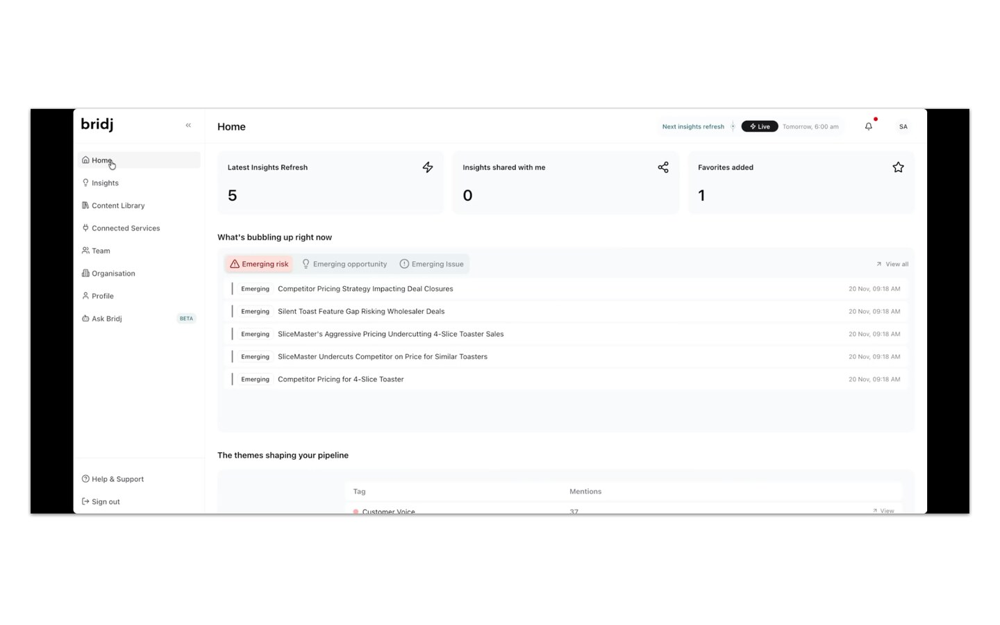
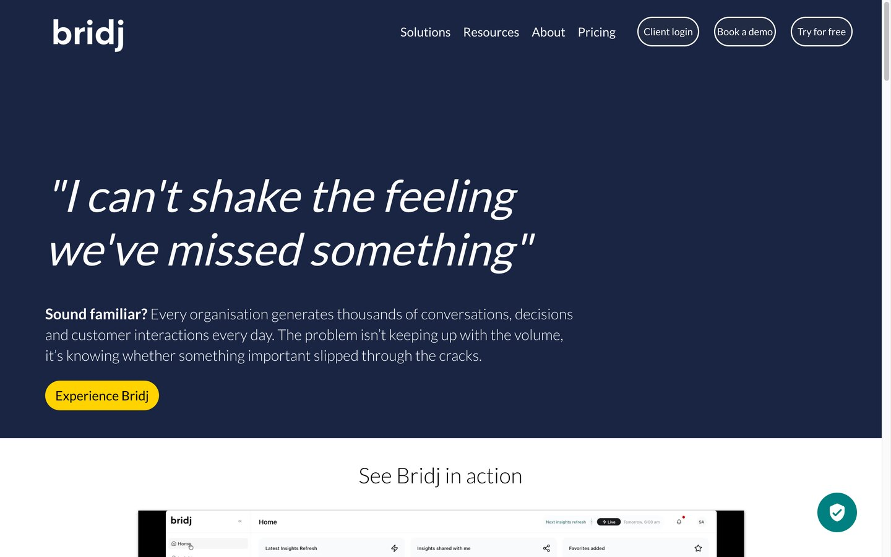
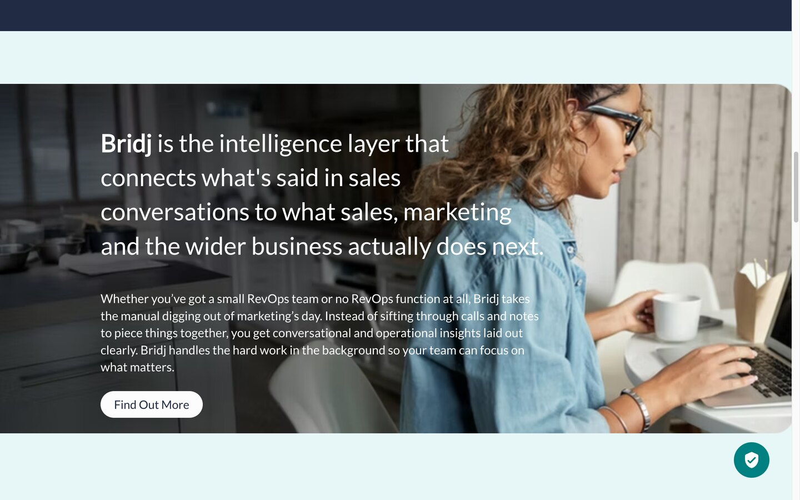

A year and counting as embedded tech lead for a UK conversational-and-operational-intelligence platform - the layer that connects what customers actually say to what a business does next. Architecture, hands-on engineering across a 17-service system, and the final sign-off on every release.



Bridj's own product and public site. Dashboard shown with demo data.
Every company generates thousands of conversations, calls and customer interactions. Bridj connects to the tools where those live and turns them into a single source of truth - surfacing the trends, opportunities, risks and issues that would otherwise slip through the cracks, for marketing, sales, product and leadership alike.
Raw conversation data becomes tagged themes, emerging risks and opportunities, and the topics shaping the pipeline - refreshed on a schedule, not dug out by hand.
A conversational AI layer that answers questions over an organisation's own insights and data, drafts content from what's resonating, and writes executive briefings - in natural language.
Campaign and content generation grounded in what customers actually said - built from real conversations rather than guesswork, and refined interactively.
The product is one screen. Behind it is a pipeline that carries messy, multi-source conversation data all the way to answers - designed, built and owned as tech lead, stage by stage.
OAuth connectors pull data from seven external systems - major CRMs, meeting recorders and revenue-intelligence tools - on a schedule, into cloud storage. Stateless and independently scalable, so a slow sync never touches the app.
A three-stage pipeline validates every incoming file, quarantines the failures, loads the good data to a raw store, then cleans it into a normalized shape - so downstream AI never sees malformed input.
Transcripts are summarized and embedded into a vector store, isolated per organisation. This is the substrate that makes semantic search and retrieval possible.
A batch pipeline runs retrieval-augmented generation and clustering to turn the vectorized data into the insights, themes and signals that appear on the dashboard, persisted to an analytics database.
Four purpose-built AI agents - insight Q&A, content generation, data analysis and executive briefings - stream answers to the app, and an MCP server exposes the same tools to external AI clients. Every query scoped to one organisation.
The web application: organisation-level data isolation, a five-role permissions model, subscription billing, and a modern React front end - the surface everything else feeds.
Embedded tech lead isn't a title on a slide - it's the person the release can't ship without. Three jobs at once: architect, builder, and the technical gate before production.
System design from first principles: the service boundaries, the data contracts between them, the choice to split ingestion, batch AI and interactive AI into separate scalable pieces. Decisions that still hold a year of growth later.
Hands on the keyboard across the whole stack - AI pipeline, backend, infrastructure, front end - and the reviewer who sets the quality bar for everyone else's. Plus the un-glamorous wins, like consolidating three drifting data repos into one clean ingestion monorepo.
Formal technical sign-off: nothing reaches production without it. Dependency and risk analysis across a release, migration and rollout planning, and the final go / no-go call - the safety valve between "done" and "deployed".
A one-person prototype and a platform a team can safely ship to every week are different things. This is the second one.
The whole estate is defined in Terraform across production and a parity sandbox, spanning two cloud providers, with disaster recovery in its own region. Environments are reproducible, not hand-tended - and a new one is a config change, not a weekend.
A dedicated Playwright suite exercises the real user journeys against both sandbox and production, so regressions are caught before a release reaches the sign-off gate.
Automated build, test and deploy across every repo, with a shared library of reusable pipeline steps so seventeen services stay consistent instead of each reinventing its own.
Organisation isolation runs through every layer - storage, embeddings, agents, app - with role-based access control, so one customer's data can never surface in another's.
Definition of Done, a QA stage, and release management with formal technical sign-off - lightweight governance that lets a team move fast without breaking production.
We embed as your tech lead: architecture, hands-on engineering across the whole stack, and the judgement to say when a release is actually ready. From first commit to production, and the year after.
We're fully booked for new custom builds and embedded roles right now — say hello at tihomir.jauk@lumiverse.hr and we'll reach out when we reopen. Want to use one of our products — Tvrtko.ai, Moj Kolega, Titlomat and more? Those are open — get in touch and we'll help you get started.